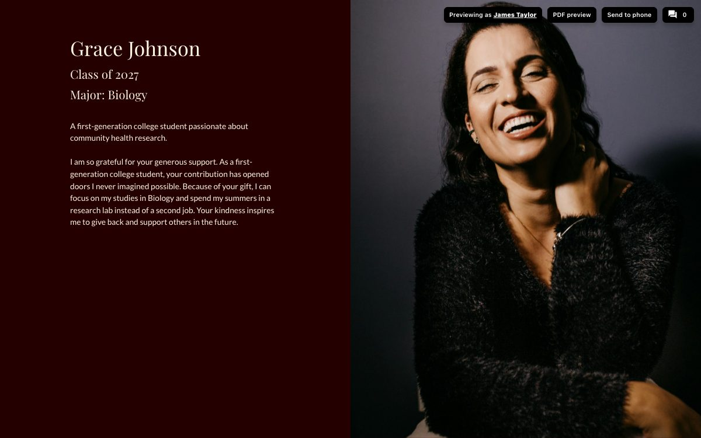

The people behind every gift, in their own words.
Build a form, send one link, and gather stories, notes, and photos from the people you serve. A repeater in your report turns every response into its own card, and each donor sees the stories their gift made possible.
Read the transcript
The best part of any impact report is the people in it. Storyraise Collect gathers their stories, and your reports tell them.
Start a new collection and choose what you want to collect, like thank-yous from the students your donors support.
Add the fields you need: short text for a name, long text for their story, and a file upload for a photo. Each field saves to a variable, like student note.
Get form link and send it however you like. Students answer on any device, photo and all.
Every answer lands in the collection, one row per student, ready to review, edit, or export.
In your report, add a repeater. Under Repeat For Each Item in, select your collection. Then lay out one story card with variables like student name, and set its image to the student's photo.
Now tell it which stories to show. Under Repeat When, match the fund code each student entered to the fund reference on every donor's record. Each donor sees the students their own gift supports.
Emily Wilson's fund supports Sophia and David, so theirs are the stories she reads. James Taylor sees Grace and Marcus instead. And when a new matching story comes in, it shows up the next time the report opens.
Collect the stories once, and every report tells the right ones.
Explore it yourself
Names, stories, and photos in this demo are sample data, and nothing you click saves, sends, or collects anything.
See it on a bigger screen

How it works
Build a form
Start a collection and choose what you want to collect. Add short and long text, choices, dates, and file uploads for photos or video. Each field saves to a variable, like @@student_note@@.
Send one link
Get form link and share it by email, text, or social media. Respondents answer on any device, and every response lands in the collection as its own row, ready to review or export.
Repeat it in your report
Add a Repeater, point it at your collection, and design one card. Repeat When picks the stories that match each donor's record, and every match gets its own copy of the card.
Each donor meets the students their gift supports
The repeater matches each story's fund to the donor's fund reference. Same report, different students.
Emily Wilson, Health Sciences Innovation Fund
- Sees the fund update for Health Sciences Innovation.
- Reads stories from Sophia Ramirez (Nursing) and David Chen (Public Health).
James Taylor, STEM Research Endowment
- Sees the fund update for STEM Research.
- Reads stories from Grace Johnson (Biology) and Marcus Lee (Computer Science).
New to personalized reports? See how constituents, variables, and personalized links work.
Questions teams ask
Can people send photos and video?
Yes. Add a File upload field and set Allowed File Types to Images only, Videos only, Documents only, or Any file. Uploads can be up to 200 MB. Use the uploaded file in a report card with Override Media.
Do I approve responses before they show in a report?
There is no separate approval step. A repeater shows every row that matches its Repeat When, so edit or delete a response in the collection, or narrow Repeat When, to keep it out. Managing responses explains the options.
How do I show a story only to one donor?
Two ways. Match a shared field, like this demo's fund_id is @@fund_reference@@. Or open the response, use Assign to... Constituents to tag the donor, and set the repeater to Repeat When constituents contains @@id@@. Use contains, not is, because a response can be tagged to several donors.
Can a repeater show every story to everyone?
A repeater needs a Repeat When to show anything, and fills in when the report is opened from a personalized link. To show every response to every donor, pick a column every row has and a condition they all meet, for example class_year greater than 2000.
What does a report show without a personalized link?
Repeaters fill in when a donor opens their personalized link. Without it, the page shows the card's variables as typed, like @@student_name@@, so share the report with each donor's link from Share or Storyraise Send.
Can I put the form inside a report?
Yes. Add a Form element to any report and choose The form, in the report, or A button that opens the form. Embedding a Collect form has the details.
Which plan includes repeaters?
Repeaters need the Precision plan with Storyraise Collect. Collect forms and responses come with Collect.